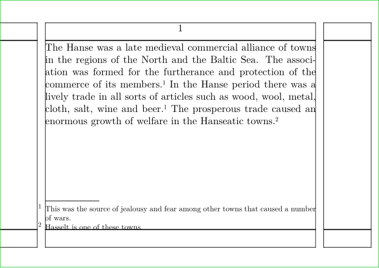
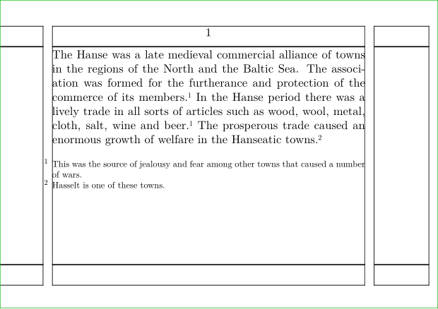

Contents
Summary
The instances of \note are used for footnotes and endnotes.
Instances
| \footnote | Insert a footnote mark, and a footnote at the bottom of the page. (Or elsewhere, depending on \setupfootnotes.) If the footnote is specified with a label, you can refer to it elsewhere using \note[label], and the extra reference will use the same mark as the original. |
| \endnote | Insert a footnote mark, but no footnote. If the endnote is specified with a label, you can refer to it elsewhere using \note[label], and the extra reference will use the same mark as the original. You need to use \placenotes[endnote] at the place where you want to have them. |
Settings instance
Settings instance:assignment
Description
Examples
Footnote example
-
\setuppapersize[A7,landscape] \showframe \starttext The Hanse was a late medieval commercial alliance of towns in the regions of the North and the Baltic Sea. The association was formed for the furtherance and protection of the commerce of its members.\footnote[war]{This was the source of jealousy and fear among other towns that caused a number of wars.} In the Hanse period there was a lively trade in all sorts of articles such as wood, wool, metal, cloth, salt, wine and beer.\note[war] The prosperous trade caused an enormous growth of welfare in the Hanseatic towns.\footnote{Hasselt is one of these towns.} \stoptext
- 
Endnote example
-
\setuppapersize[A7,landscape] \showframe \starttext The Hanse was a late medieval commercial alliance of towns in the regions of the North and the Baltic Sea. The association was formed for the furtherance and protection of the commerce of its members.\endnote[war]{This was the source of jealousy and fear among other towns that caused a number of wars.} In the Hanse period there was a lively trade in all sorts of articles such as wood, wool, metal, cloth, salt, wine and beer.\note[war] The prosperous trade caused an enormous growth of welfare in the Hanseatic towns.\endnote{Hasselt is one of these towns.} \placenotes[endnote] \stoptext
- 